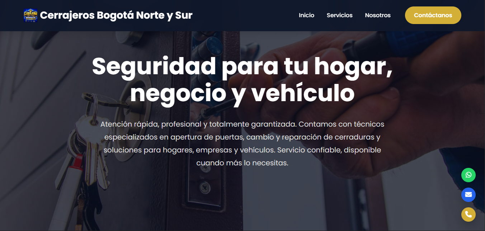

Diseño responsive
Adaptación de la interfaz para computadores, tablets y dispositivos móviles.
PROYECTO
Sitio web responsive desarrollado para una empresa de cerrajería, diseñado para presentar sus servicios de manera clara y facilitar el contacto con sus clientes.

DESCRIPCIÓN
Este proyecto consiste en el desarrollo de un sitio web para una empresa de cerrajería, creado para presentar sus principales servicios y facilitar la comunicación con clientes potenciales.
El diseño fue desarrollado buscando ofrecer una experiencia clara, sencilla y adaptable a diferentes dispositivos, permitiendo acceder fácilmente a la información desde computadores y dispositivos móviles.
El sitio fue construido desde cero, utilizando tecnologías web y aplicando principios de diseño responsive, estructura organizada e interacción mediante JavaScript.
Crear una presencia web profesional que permita mostrar los servicios de la empresa y facilitar el contacto directo con sus clientes.
CARACTERÍSTICAS
Adaptación de la interfaz para computadores, tablets y dispositivos móviles.
Organización clara de los diferentes servicios ofrecidos por la empresa.
Estructura sencilla que permite encontrar rápidamente la información principal.
Integración de opciones que permiten a los clientes comunicarse fácilmente con la empresa.
Interfaz desarrollada con una identidad visual orientada al servicio de cerrajería.
Uso de JavaScript para mejorar la interacción y el comportamiento de la página.
DESARROLLO
Estructura y organización del contenido del sitio.
Diseño visual, estilos y adaptación responsive.
Interactividad y comportamiento dinámico de la interfaz.
PROYECTO EN LÍNEA
Puedes conocer directamente el resultado del proyecto y explorar su funcionamiento.